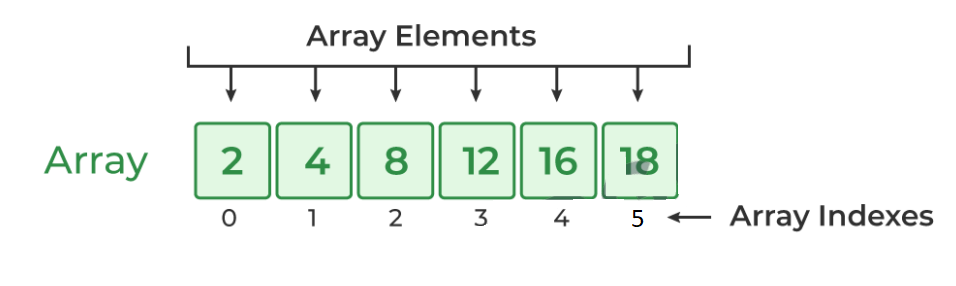

47. What is an Array?

1. An Array is just a list of values.
SIMILAR TYPE OF DATA or HOMOGENEOUS DATA
Array in Javascript works & stores values like a python list.
Examples: Name of Students, Roll no. of Students etc.
2. Index: Starts with 0.
3. Arrays are used for storing multiple values in a single variable.
48. Array Syntax & Values
1. Use [] to create a new array, [] brackets enclose list of values.
2. Arrays can be saved to a variable.
3. Accessing Values: Use [] with index.
4. Syntax Rules:
• Brackets start and end the array.
• Values separated by commas.
• Can span multiple lines.
5. Arrays can hold any value, including arrays.
6. typeof operator on Array Returns Object.
Example:--
// console.log('48. Array Syntax & Values');
let numbers = [1, 4, 3 , 7, 5,
6, 7, 2];
console.log(numbers);
// Accessing Values
console.log(numbers[0]);
console.log(numbers[1]);
console.log(numbers[7]);
console.log(numbers[70]); // If ivalid index, it gives: undefined
console.log(numbers[7]);
let second = [1, 'banana', 'qiwi', 'apple', true, 33.44];
console.log(second);
console.log(second[3]);
Array is an OBJECT of special kind
console.log(typeof second); // object
49. Array Properties & Methods
 1. Array.isArray() checks if a variable is an array.
1. Array.isArray() checks if a variable is an array.
WITH THIS WE CAN"T NAME THE array name as Array
2. Length property holds the size of the array.
3. Common Methods:
• push/pop: Add or remove to end.
• shift/unshift: Add or remove from front.
• splice: Add or remove elements.
• toString: Convert to string.
• sort: Sort elements.
• valueOf: Get array itself.
4. Arrays also use reference like objects.
5. De-structuring also works for Arrays.
Examples:
console.log('49. Array Properties & Methods');
let Array1 = [1, 3, 44.33, true, "String", 'Haily', `Bailey`];
// To check if a variable is an array or not we can use : Array.isArray('arrayName');
console.log(`Array.isArray() : ${Array.isArray(Array1)}`); // true
let obj = {1 : 'KaleyCuoco'};
console.log(Array.isArray(obj)); // false
console.log(Array1);
Array1.push('IamPushed'); // appended at the end
console.log(Array1);
Array1.push('car');
Array1.push(0,'Poker','false');
console.log(Array1);
// Array1.pop(); // By default it REMOVES & RETURNS the last VALUE, we can store returned.
console.log('popped ' + Array1.pop()); // Concatenation
// Array1.pop(INDEX); // REMOVES & RETURNS the last VALUE, index doesn't matter
console.log(Array1);
// shift/unshift // Array1.shift(); // shift(): string | number | boolean | undefined
// shift() REMOVES from the front
console.log(Array1.length);
console.log(Array1);
console.log('shift: ' + Array1.shift());
Array1.shift();
console.log(Array1);
// INSERTS from the front
console.log('unshift: ' + Array1.unshift('Appended to front'));
console.log(Array1);
// splice
// splice(start: number, deleteCount?: number): (string | number | boolean)[]
// splice is used to DELETE ELEMENTS, splice(from start index, no. of elements to delete)
let arr = ["apple", true, 'banana', -45.55, 22, 33, 56.02];
console.log(arr);
arr.splice(4, 2); // Implies Start deleting from 4th index and delete 1 element (includes 4th element).
console.log(arr);
// toString
// Convert to string i.e. Displays/Prints the array ELEMENTS in string form.
console.log(arr.toString()); // apple,true,banana,45.55,56
// sort: Sorts the array
// (method) Array.sort(compareFn?: ((a: string | number | boolean, b: string | number | boolean) => number) | undefined): (string | number | boolean)[]
// strings are sorted alphabetically
console.log(arr.sort()); // Integer > Decimal > string > boolean
let arr1 = [1, 5 ,6, ,7, ,8, 9 ,67, 9, 0.1, 9 ];
console.log(arr1.sort()); // (12) [0.1, 1, 5, 6, 67, 7, 8, 9, 9, 9, empty × 2]
// valueOf: Get array itself.
// Not much used, used to create copy of array
console.log(arr);
console.log(arr.valueOf());
// 4. Arrays also use reference like objects.
let arr2 = arr1; // Here object is NOT copied ONLY reference is copied.
arr2[3] = 'I am changed using Reference';
console.log(arr2);
// 5. De-structuring also works for Arrays.
let [a, b, c, d] = Array1; // VALUES ARE ASSIGNED TO a, b, c , d from Array1 Sequentially.
console.log(a + ' ' + b + ' ' + c + ' ' + d);